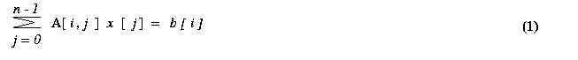
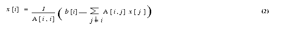

|
hyPACK-2013 : Programming on Heterogeneous computing Platforms : OpencL
|
|
The Open Computing Language is a framework for writing programs that execute across heterogeneous platforms
consisting of CPUs, GPUs, and other processors. OpenCL includes a language (based on C99) for writing kernels
(functions that execute on OpenCL devices), plus APIs that are used to define and then control the
heterogeneous platform. The OpenCL provides an opportunity for developers to effectively use the multiple
heterogeneous compute resources on their CPUs, GPUs and other processors.
Developers wanted to be able to access them together, not just off load the GPU for specific tasks
and the OpenCL programming environment may address these issues. OpenCL supports wide range of
applications, ranging from embedded and consume software to HPC solutions, through a low-level,
high-performance, portable abstraction. It is expected that OpenCL will form the foundation layer
of a parallel programming Eco-system of platform-independent tools, middle-ware, and applications.
|
List of Programs
|
Example 3.1
|
Write OpenCL program for Matrix - Vector multiplication using BLAS Library
( Assignment )
|
|
Example 3.2
|
Write a OpenCL Program for Matrix Matrix multiplication using AMD APP BLAS library function calls.
|
|
Example 3.3
|
Write a OPENCL Program for implement solution of matrix system of linear
equations Ax = b by Jacobi method using BLAS librarry
( Assignment )
|
|
Example 3.4
|
Write OpenCL program to implement the solution of Matrix system of Linear Equations
[A]{x}={b}
by Conjugate Gradient (Iterative) Method). ( Assignment )
|
|
Example 3.5
|
Demonstrate performance of LINPACK OpenCL open source Software on AMD-APP GPU
( Assignment )
|

|
Brief description of OpenCL Programs for Numerical (Matrix) Computations
|
|
Example 3.1: |
Write OpenCL program for Matrix - Vector multiplication using BLAS Library
|
|
Example 3.2: |
Write a OpenCL program for Matrix into Matrix multiplication using AMD-APP BLAS Libraries
(Download AMd-APP Makefile & source code - :
Makefile
AMD-APP-OpenclDgemmGPU.c )
|
- Objective
Write a OpenCL Program to perform Matrix Matrix multiplication using BLAS Libraries
- Description
This Program performs matrix into matrix multiplication. .
Important Steps :
|
Steps
|
Description
|
|
1.
|
Memory allocation on host and Input data Generation
Allocate memory for input matrices on host-CPU
and filled with the single or double prcesion data.
|
|
2.
|
Set opencl execution environment :
Call the function setExeEnv which sets execution environment for opencl
which performs the following :
- Get Platform Information
- Get Device Information
- Create context for GPU-devices to be used
- Create program object.
- Build the program executable from the program source.
The function performs (a). Discover & Initilaise the platforms; (b). Discoer & Initialie the devices; (c). Create a Context; (d); Create program object
build the program executable
|
|
3.
|
Create command queue using
Using clCreateCommandQueue(*)
and associate it with the device you want to execute on.
|
|
4.
|
Create device bufffer using clCreateBuffer() Api
that will contain the data from
the host-buffer.
|
|
5.
|
Write host-CPU data to device buffers
:
Use
clEnqueueWriteBuffer
|
|
6.
|
Perform Matrix matrix Multiplication using
clAmdBlasDgemm().Api.
|
|
7.
|
Write the output buffer to the Host (Copy result from device-gpu to host-cpu) using
clEnqueueReadBuffer()
|
|
8.
|
Check correctness of result on host-CPU
Compute matrix-matrix multiplication on host-CPU and compare CPU and GPU results.
|
|
9.
|
Release OpenCL resources (Free the memory)
Free the memory of arrays allocated on host-CPU & device-GPU
|
- Input
Size of the Input Matrices
- Output
Resultant vector
|
Example 3.3:
|
Write a OpenCL Program for implement solution of matrix system of linear equations
[A]{x} = {b} by Jacobi method.
|
- Objective
Write a OpenCL program, for solving system of linear equations [A]{x} = {b} using Jacobi method
- Description
The Jacobi iterative method is one of the simplest iterative techniques to solve system of linear equations.
The ith equation of a system of linear equations [A]{x}={b} is

If all the diagonal elements of A are nonzero (or are made nonzero
by permuting the rows and columns of A), we can rewrite equation (1)

The Jacobi method starts with an initial guess x0 for
the solution vector x. This initial vector x0
is used in the right-hand side of equation (2) to arrive at the next approximation
x1 to the solution vector. The vector x1
is then used in the right hand side of equation (2), and the process continues
until a close enough approximation to the actual solution is found. A typical
iteration step in the Jacobi method is
We now express the iteration step of equation 3 in terms of residual rk.
Equation (3) can be rewritten as <
Each process computes n/p values of the vector x in each iteration. These values are
gathered by all the processes and each process tests for convergence. If the values have been
computed up-to a certain accuracy the iterations are stopped otherwise the processes use
these values in the next iterations to compute a new set of values.
- Input
Input Matrix A and Initial Solution Vector x
Output
solution of matrix system Ax = b
|
Example 3.4:
|
Write a OpenCL Program for implement solution of matrix system of linear equations
[A]{x} = {b} by Conjugate Gradient method.
|
- Objective
CUDA implementation for Conjugate Gradient Method to solve the system of
linear equations [A]{x}={b}. Assume that A is symmetric positive definite matrix.
- Description
Description of conjugate gradient method :
The conjugate gradient (CG) method is an example of minimizing
method. A real n x n matrix A is positive definite if xT A x > {0}
for any n x 1 real, nonzero vector x. For a symmetric positive definite matrix A,
the unique vector x that minimizes the quadratic functional
f(x) = (1/2)xTAx-xTb
is the solution to the system Ax = b, here x and b
are n x 1 vectors. It is not particularly relevant
when n is very large, since the conjugating time for that number of iterations
is usually prohibitive and the property does not hold in presence of rounding
errors. The reason is that the gradient of functional f (x) is
Ax - b, which is zero when f (x) is
minimum. The gradient of a function is a n x 1 vector. We explain
some important steps in the algorithm. An iteration of a minimization method
is of the form
xk+1 = xk
+ taukdk
(1)
where tauk is a scalar step size and dkis
the direction vector, dk is a descent direction for f
at x. We now consider the problem of determining tauk,
given xk and dk, so that f(x)
is minimized on the line x = xk + tauk
dk, for tauk. The function f(xk+
tau dk) is quadratic in tau, and its minimization
leads to the condition
tau k = gkTgk
/ dkTAdk ,
(2)
where gk=Axk - b is
the gradient (residue) vector after k iterations. The residual
need not be computed explicitly in each iteration because it can be computed
incrementally by using its value from the previous iteration. In the (k+1)th
iteration, the residual gk+1 can be expressed
as follows:
gk+1 = Axk+1
- b
= A(xk+ tauk
dk) - b
= Axk- b + tauk
Adk
= gk + tauk Adk
(3)
Thus, the only matrix-vector product computed in each iteration is Adk,
which is already required to compute tauk in the
equation (2). If A is a symmetric positive definite matrix and d1,
d2,..., dn are direction vectors
that are conjugate with respect to A (that is, diT
Adj=0 for all 0<n, j<=n, i!=j),
then xk+1 in the Equation (1) converges to the solution
of Ax = bin at most n
iterations, assuming no rounding errors.
In practice, however, the number of iterations that yields an acceptable approximation to the solution is
much smaller than n. It also makes the gradient
at xk+1 orthogonal to search direction, i.e dkT
gk+1 = 0. Now we suppose that the search directions
are determined by an iteration of the form
dk+1 = -gk+1+ betak
dk (4)
where d0 = -g0 and beta0,
beta1 , ...... remain to be determined. We find the new search
direction in the plane spanned by the gradient at the most recent
point and previous search direction. The parameter betak+1is determined by following
equation
Betak+1 = gTk+1Adk/
dTkAdk (5)
and, one can derive orthogonality relations
gTkg l= 0 (l !=
k);
dTkAdl = 0 (l !=k)
The derivation of the above equation (5) and orthogonality relations
is beyond the scope of this document. For details please refer [ ]. Using
equation (3) and orthogonality relations, the equation (5) can be
further reduced to
Betak+1 = gTk+1gk+1/
gTkgk< (6)
The above equations (1) to (6) lead to CG algorithm. The algorithm
terminates when the square of the Euclidean vector norm of gradient (residual)
falls below a predetermined tolerance value. Although all of the
versions of the conjugate gradient method obtained by combining the formulas
for gk, Betak, and tauk
in various ways are mathematically equivalent, their computer implementation
is not. The following version is compared with respect to computational
labor, storage requirements, and accuracy. The following sequence of steps
are widely accepted.
1. tau k =
gkTgk /
dkTAdk
2. xk+1 =
xk + tauk dk
3. gk+1 =
gk + tauk Adk
4. Betak+1 = gTk+1gk+1/
gTkgk
5. dk+1 = -gk+1 +
Betak dk
where k = 0, 1, 2, .......... Initially we choose x0,
calculate g0 = Ax0 - b , and put d0= -g0.
The computer implementation of this algorithm is explained as follows :
void CongugateGradient(float
x0 [ ], float b [ ], float d)
{
float g, Delta0, Delta1, beta;
float temp, tau;
int iteration;
iteration = 0;
x = x0;
g = b;
g = A x - g;
Delta0 = gT * g;
if ( Delta0 <= EPSILON)
return;
d = -g;
do {
iteration = iteration + 1;
temp = A * d;
tau = Delta0 / dT * temp;
x = x + tau * d;
g = g + tau * temp;
Delta1 = gT * g;
if ( Delta1 <= EPSILON )
break;
beta = Delta1 / Delta0;
Delta0 = Delta1;
d = -g + beta * d;
}
while(Delta0 > EPSILON && Iteration < MAX_ITERATIONS);
return;
Regarding one-dimensional arrays of size n x 1 are required for
temp, g, x, d. The storage requirement for matrix. A is depends upon the structure
( dense, band, sparse ) of the matrix.The two dimensional n x n array is the
simplest structure to store matrix A. For large sparse matrix A this structure wastes a large amount
of storage space, for such matrix A suitable storage scheme should be
used.
-
The preconditioned conjugate gradient algorithm
Let C be a positive definite matrix factored in the form C = E ET,
and let the quadratic functional
f(x) = (1/2)xTAx - xTb + C ,
We define second quadratic functional g(y) by the transformation y = ETx,
g(x) = g(E-Ty) = (1/2)yTA*y
- yTb * + C*
where A * = E-1AE-T, b* =
E-1b, C* = C.
Here, A* is symmetric and positive definite. The similarity transformation
E-TA*ET = E-TE-1A
= C-1A
reveals that A* and A have same eigen values. If C can be found
such that the condition number of the matrix A* is less than
the condition number of the matrix A, then the rate of convergence of the
preconditioned method is better than that of conjugate gradient method.
We call C the preconditioning matrix, A* the preconditioned
matrix, We assume that the matrix C = EET is positive definite,
since E is nonsingular by assumption. If the coefficient matrix A has l
distinct eigen values, the CG algorithm converges to the solution
of the system Ax = b in at most l iterations
(assuming no rounding errors). Therefore, if A has many distinct eigen
values that vary widely in magnitude, the CG algorithm may require a large
number of iterations to converge to an acceptable approximation to the
solution.
The speed of convergence of the CG algorithm can be increased
by preconditioning A with the congruence transformation A*
= E-1AE-T where E is a nonsingular
matrix. E is chosen such that A* has fewer distinct eigen values
than A. The CG algorithm is then used to solve A* y =b*,
where x =(ET)-1y . The resulting
algorithm is called the preconditioned conjugate gradient (PCG)
algorithm. The step performed in each iteration of the preconditioned
conjugate gradient algorithm are as follows
1. tau k =
gkThk /
dkTAdk
2. xk+1
= xk + tauk dk
3. gk+1 =
gk + tauk Adk
4. hk+1 =
C-1gk+1
5. &nsbp; betak+1 = gTk+1hk+1/
gTkhk
6. dk+1 =
-hk+1 + betak+1dk
where k = 0, 1, 2, .......... Initially we choose x0,
calculate g0 = Ax0 - b, h0=
C-1g0 and d0 = -h0.
The multiplication by C-1 in step (4) is to be interpreted as solving a system of equations
with coefficient matrix C. A source of preconditioning matrices is the class
of stationary iterative methods for solving the system
Ax* = b.
- Parallel implementations of the PCG algorithm
The parallel conjugate gradient algorithm involves the following
type of computations and communications
Partitioning of a matrix : The matrix A is obtained by discretization
of partial differential equations by finite element, or finite difference
method. In such cases, the matrix is either sparse or banded. Consequently,
the partition of the matrix onto p processes play a vital
role for performance. For, simplicity , we assume that A is symmetric
positive definite and is row-wise block-striped partitioned.
Scalar Multiplication of a vector and addition of vectors :
Each of these computations can be performed sequentially regardless
of the preconditioner and the type of coefficient matrix. If all vectors
are distributed identically among the processes, these steps require no
communication in a parallel implementation.
Vector inner products :
In some situations, partial vectors are available on each processes.
MPI Collective library calls are necessary to perform vector inner products
If the parallel computer supports fast reduction operations, such as optimized
MPI, then the communication time for the inner-product calculations can
be made minimum.
Matrix-vector multiplication :
The computation and the communication cost of the matrix-vector
multiplication; depends on the structure of the matrix A. The
parallel implementation of the PCG algorithm for three cases one
in which A is a block-tridiagonal matrix of the type, two in
which it is banded unstructured sparse matrix, and three in which the matrix
is sparse give different performance on parallel computers. Various
parts of the algorithm in each of the three cases dominate in terms of
communication overheads.
Solving the preconditioned system :
The PCG algorithm solves system of linear equations in each
iteration The preconditioner C is chosen so that solving the system modified
system is in expensive compared to solving the original system of
equations Ax = b. Nevertheless, preconditioning increases
the amount of computation in each iteration. For good preconditioners,
however, the increase is compensated by a reduction in the number of iterations
required to achieve acceptable convergence. The computation and the
communication requirements of this step depends on the type
of preconditioner used. preconditioning method such as diagonal preconditioning,
in which the preconditioning matrix C has nonzero elements only
along the principle diagonal does not involve any communication Also,
Incomplete Cholesky (IC) preconditioning, in which C is based on incomplete
Cholesky factorization of A and it may involve different computations and
communications in parallel implementation.
The convergence of CG method iterations performed by checking the error
criteria i.e. euclidean norm of the residual vector should be less than
prescribed tolerance. This convergence check involves gathering of real
value from all processes, which may be very costly operation.
We consider parallel implementations of the PCG algorithm using
diagonal preconditioner for dense coefficient matrix type. As we
will see, if C is a diagonal preconditioner, then solving the modified
system does not require any interprocessor communication. Hence,
the communication time in a CG iteration with diagonal preconditioning
is the same as that in an iteration of the unpreconditioned algorithm.
Thus the operations that involve any
communication overheads are computation of inner products, matrix-vector
multiplication and, in case of IC preconditioner solving the
system.
- Input
Row and Column in input Matrix
- Output
prints the results of the solution x of linear system of matrix equations Ax = b
|
|
|
|